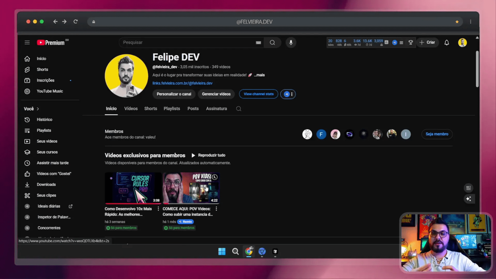
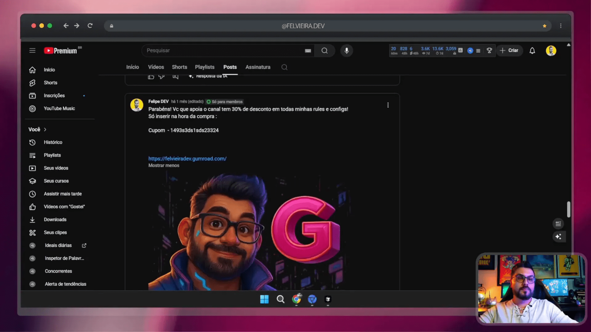
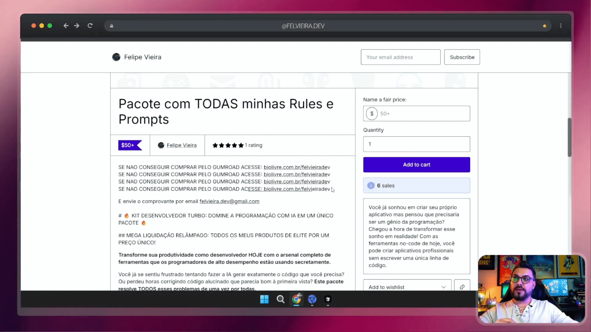
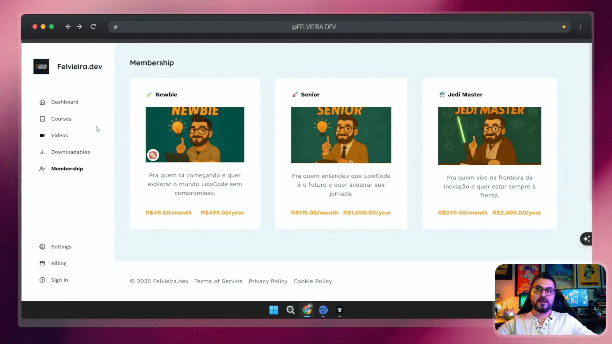

Se você está buscando maneiras de aprimorar suas habilidades em automação e inteligência artificial, você está no lugar certo! Neste guia, vamos explorar como você pode adquirir as minhas automações, conhecidas como “Rules”, e aproveitar ao máximo os benefícios que ofereço através das assinaturas. Vamos abordar tudo, desde como se tornar um membro até dicas sobre descontos e conteúdos exclusivos. Então, vamos lá!
Sumário
- 🛠️ Introdução às Rules e Automações
- 📜 Acesso a Conteúdo Exclusivo para Membros
- 📊 Níveis de Assinatura Explicados
- 💰 Descontos Exclusivos para Assinantes
- 🛒 Como Comprar Rules (Gumroad e Mercado Livre)
- 📚 Cursos Disponíveis e Como Adquiri-los
- ❓ Dúvidas Frequentes
- 🔚 Considerações Finais e Suporte
🛠️ Introdução às Rules e Automações
As “Rules” são ferramentas poderosas que podem facilitar seu trabalho com automações. Elas permitem que você crie e gerencie tarefas de maneira mais eficiente, seja no desenvolvimento de software ou em outras áreas. Muitas pessoas têm perguntado como funcionam essas ferramentas e como podem adquiri-las. Aqui, vou explicar tudo o que você precisa saber.
📜 Acesso a Conteúdo Exclusivo para Membros
Quando você se torna membro do meu canal, tem acesso a conteúdos exclusivos que não estão disponíveis para o público geral. Isso inclui vídeos, tutoriais e automações que ajudam a maximizar seu aprendizado e eficiência. Vamos explorar como você pode acessar esse conteúdo.

🔑 Como se Tornar Membro
Para se tornar um membro, basta visitar a página inicial do meu canal no YouTube e clicar na opção de assinatura. Você verá várias opções de assinatura, cada uma com seus próprios benefícios. Ao se inscrever, você desbloqueia uma série de vídeos que só são acessíveis para membros.
🚀SAIU o CURSO, NAO PERCA tempo e aprenda com um DEV SENIOR 💪 https://lowcodemastery.felvieira.com.br/
👉 Lançamento área de membros METADE DO VALOR APROVEITE, ÚLTIMA SEMANA https://app.felvieira.dev/memberships
════════════════════════════════
📌 I M P O R T A N T E Como adquirir Cursos, Automações (Rules) e afins ════════════════════════════════
▶️ Vídeo-tutorial passo a passo ( precisa se inscrever pra ver o vídeo ) https://youtu.be/QRKnaJSNN0s
🔗 Links oficiais
• Gumroad (pagamento em dólar) – http://url.felvieira.com.br/gumroad
• Loja BR (Mercado Livre/boleto) – http://url.felvieira.com.br/mlroad
• Assinaturas e níveis de membro – http://url.felvieira.com.br/oficial ════════════════════════════════
💬 Grupos Exclusivos
Além do conteúdo, como membro, você também terá acesso a grupos exclusivos no WhatsApp e Telegram. Esses grupos são uma ótima maneira de interagir com outros membros, trocar ideias e tirar dúvidas sobre as automações e outros tópicos relacionados.
📊 Níveis de Assinatura Explicados
Existem diferentes níveis de assinatura, cada um oferecendo benefícios exclusivos. Vamos detalhar cada um deles para que você possa escolher o que melhor se adapta às suas necessidades.
📈 Nível Trainee
O nível básico, conhecido como Trainee, custa apenas R$7. Neste nível, você terá acesso a conteúdos básicos e poderá interagir com outros membros. É uma excelente maneira de começar seu aprendizado.
🌟 Nível Sênior e Sênior Spec
Os níveis Sênior e Sênior Spec oferecem acesso a todos os meus “Rules” e automações. Além disso, você terá acesso a um grupo exclusivo onde pode interagir mais de perto comigo e tirar dúvidas específicas. Este é o nível ideal para quem deseja um aprendizado mais aprofundado.
💰 Descontos Exclusivos para Assinantes
Uma das vantagens de ser assinante é o acesso a descontos significativos nas minhas automações. Vamos ver como isso funciona.

📉 Desconto para Inscritos
Se você é apenas um inscrito no canal, ainda pode aproveitar um desconto de 10% nas compras feitas através do Gumroad. É uma ótima maneira de começar a adquirir as automações sem gastar muito.
💸 Desconto para Assinantes
Assinantes têm acesso a um desconto ainda maior de 30% em todas as minhas “Rules”. Isso é válido para qualquer nível de assinatura, mas especialmente vantajoso para os níveis Sênior e Sênior Spec, onde você já tem acesso gratuito a várias automações.
🛒 Como Comprar Rules (Gumroad e Mercado Livre)
Agora que você conhece os benefícios das assinaturas e os descontos disponíveis, vamos abordar como você pode adquirir as “Rules” e automações. Existem duas opções principais: Gumroad e Mercado Livre.
Turbine seu Desenvolvimento com Prompts!
Você já sonhou em criar seu próprio aplicativo mas pensou que precisaria ser um gênio da programação? Chegou a hora de transformar esse sonho em realidade! Com as ferramentas no-code de hoje, você pode criar aplicativos profissionais sem escrever uma única linha de código.

🛍️ Compras no Gumroad
Para quem prefere comprar diretamente, o Gumroad é a plataforma ideal. As compras são feitas em dólar, então é necessário um cartão internacional. Se você não tiver essa opção, não se preocupe, há alternativas.
📦 Compras pelo Mercado Livre
Se você encontrar dificuldade em comprar pelo Gumroad, pode optar por comprar diretamente pelo Mercado Livre. Após a compra, basta enviar o comprovante para que eu possa liberar o acesso às suas automações.
📚 Cursos Disponíveis e Como Adquiri-los
Além das automações, ofereço uma série de cursos que podem ajudá-lo a se aprofundar ainda mais no mundo da programação e automação. Vamos conferir quais são os cursos disponíveis e como você pode acessá-los.

🎓 Módulos de Curso
Os cursos estão divididos em níveis, desde iniciantes até avançados. O primeiro curso que estou lançando é sobre como cadastrar e configurar seu ambiente de desenvolvimento. Este curso é acessível a todos os assinantes, mas também pode ser adquirido separadamente.
🔗 Acesso a Tutoriais
Os membros têm acesso a uma biblioteca de tutoriais, que são vídeos curtos e objetivos, além de cursos completos. Isso permite que você aprenda no seu próprio ritmo e tenha acesso a conteúdos sempre atualizados.
❓ Dúvidas Frequentes
Se você ainda tem dúvidas sobre como funciona o sistema de assinaturas e compras, aqui estão algumas perguntas frequentes que podem ajudar.
- Não recebeu a Rule pelo Mercado Livre? Reenvie o comprovante e verifique a caixa de spam.
- Quer trocar de plano? O YouTube permite upgrade/downgrade proporcional.
- Enquanto sua assinatura estiver ativa, seu cupom permanece válido.
- Para usar as automações, baixe os scripts do link privado e siga o mini-tutorial em vídeo.
🔚 Considerações Finais e Suporte
Espero que este guia tenha esclarecido suas dúvidas sobre como adquirir as “Rules” e os benefícios das assinaturas. Se você ainda tiver perguntas, não hesite em deixar um comentário ou entrar em contato. Estou aqui para ajudar!
Se você está pronto para começar sua jornada no mundo da automação e inteligência artificial, inscreva-se no canal, escolha um nível de assinatura, e aproveite todos os benefícios que ofereço. Vamos juntos aprimorar suas habilidades e alcançar novos patamares!
Obrigado por ler e espero vê-lo em breve na comunidade!
Este artigo é baseado no meu video 🔥 Como Conseguir 30% OFF nas Minhas Rules de IA | Guia Completo de Assinaturas e Benefícios pra mais detalhes vejam direto no youtube.